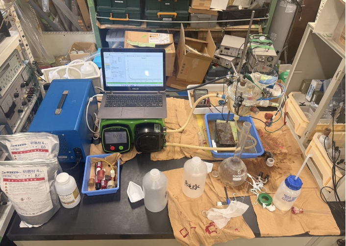

PRJ·01

Stage de Recherche : Synergie Érosion-Corrosion
Ouvrir la ficheStage de recherche de 9,5 semaines (11 mai — 17 juillet 2026) au sein d'ELyTMaX (IRL 3757), laboratoire international associant le CNRS, l'INSA Lyon, l'École Centrale de Lyon et l'Université de Tohoku, sur le campus d'Aobayama à Sendai (Japon). Avec Adem Amzighe, nous avons été les tout premiers étudiants de l'IUT de Blois à intégrer cette structure — un véritable rôle d'ambassadeurs ouvrant la voie à une collaboration entre les deux établissements. Étude, sous la supervision de Nicolas Mary, de la synergie érosion-corrosion d'un acier sous chargement en hydrogène.
Contexte & problématique
- Dans de nombreux secteurs (pétrochimie, énergie, nucléaire, traitement de l'eau), les pièces métalliques subissent simultanément la corrosion chimique d'un fluide et l'abrasion mécanique de particules. Cette combinaison génère un phénomène synergique : la perte totale T = E + C + ΔS, où le terme de synergie ΔS peut représenter 50 à 70 % de la dégradation.
- S'y ajoute la fragilisation par l'hydrogène : sous polarisation cathodique, la réduction de l'eau produit de l'hydrogène naissant qui diffuse dans le réseau métallique. L'influence de la vitesse d'écoulement sur cette pénétration reste mal quantifiée — c'est l'objet du stage.
Dispositif expérimental
- Boucle hydraulique en circuit fermé : pompe péristaltique Verderflex Vantage 5000 projetant un jet d'électrolyte (NaCl 3 %) perpendiculairement (90°) sur l'échantillon, débits maîtrisés de 20 à 90 mL/s.
- Cellule électrochimique à 3 électrodes : électrode de travail (acier carboné, surface active 5,76 cm²), référence Ag/AgCl, contre-électrode en graphite. Pilotage par potentiostat BioLogic SP-150 via le logiciel EC-Lab.
- Particules abrasives : alumine blanche WA (Dv = 314 µm), 10 g introduits uniquement lors des phases galvanostatiques.
- Préparation métallographique : polissage systématique sur polisseuse Marumoto Struers S5629 ; usinage d'une nouvelle génération d'échantillons cylindriques (tronçonnage Discotom-10, découpe de précision Accutom-10 à 0,100 mm/s).
Les 3 campagnes de mesure
- Campagne 1 — OCP + LSV (sans particule) : suivi du potentiel à l'abandon (OCP, 1 h) puis voltamétrie linéaire (LSV à 1 mV/s), réalisés dans un même essai. Objectif : caractériser le comportement purement électrochimique de la surface à différents débits (statique, 20, 40, 60 mL/s) et mettre en évidence le seuil critique de cisaillement.
- Campagne 2 — Chronopotentiométrie à −5 mA : premier niveau de courant cathodique imposé, avec particules d'alumine, pour explorer les tendances hydrodynamiques (20, 60, 90 mL/s). A révélé une corrosion résiduelle (rouille) : ce faible courant est insuffisant pour bloquer totalement l'oxydation.
- Campagne 3 — Chronopotentiométrie à −20 mA : forte protection cathodique pour supprimer la corrosion résiduelle et isoler l'érosion mécanique pure (régimes contrastés 20 et 90 mL/s). Absence totale de rouille, entrée dans le régime limité par le transport de matière.
Protocole en 3 phases (campagnes galvanostatiques à −5 et −20 mA)
- Phase 1 — Protection cathodique statique (1 h) : stabilisation du système au repos pour établir un potentiel de référence, sans mouvement de fluide.
- Phase 2 — Activation par jet pur (5 min) : mesure de l'effet hydrodynamique seul (apport d'oxygène, frottement), sans particule.
- Phase 3 — Érosion-corrosion (30 min) : introduction des 10 g de particules d'alumine pour observer la synergie sous l'action conjuguée du courant imposé et des impacts.
Étalonnage & validation métrologique du banc
- Jaugeage gravimétrique de la pompe : avant toute mesure, vérification de la précision du débit par collecte de l'électrolyte dans un bécher taré, pesé après une durée chronométrée (Q = m/t). 12 essais répartis sur 5 débits cibles (15, 21, 30, 50, 65 mL/s), avec des temps de mesure allongés (10-15 s) pour limiter l'erreur humaine.
- Régression obtenue : droite d'étalonnage y = 1,047×10⁻⁶·x (débits en m³/s) forcée à l'origine, avec R² = 0,894 — soit 89 % de la variabilité du débit réel maîtrisée par la consigne. Trois débits fiables retenus pour la suite : 20, 40 et 60 mL/s.
- Analyse des incertitudes : la principale source d'erreur étant le temps de réaction manuel au chronomètre (±0,3 s), l'incertitude sur le débit est de ±2 à 3 % aux débits modérés, montant à ±5 % à fort débit (90 mL/s, collecte plus rapide).
- Précision des instruments : potentiostat BioLogic SP-150 (résolution 75 µV en potentiel, 0,004 % en courant) et profilomètre Keyence VR-3200 (résolution 0,1 µm, justesse ±3 µm) — des performances très supérieures aux besoins de l'étude.
Caractérisation de l'usure
- Profilométrie 3D : Keyence VR-3200 (technologie « ONE-SHOT 3D » par projection de franges) pour cartographier la surface usée et quantifier, par comparaison, le volume de matière arrachée après les essais galvanostatiques.
Résultats clés
- Validation du protocole : après une première campagne bruitée, normalisation des données en densité de courant (mA/cm²) et amortissement mécanique des pulsations de la pompe ; reproductibilité démontrée et hiérarchie physique cohérente (J₂₀ < J₄₀ < J₆₀).
- Franchissement d'un seuil critique : à −1,5 V, le courant chute brutalement à −103,6 mA à 60 mL/s (contre ≈ −24 mA aux débits faibles), traduisant l'arrachement de la couche de passivation par cisaillement.
- Quantification de l'érosion (profilométrie) : volume moyen arraché de 0,00 / 0,28 / 0,38 mm³ à 20 / 60 / 90 mL/s — preuve physique que l'usure mécanique croît avec le débit.
- Protection cathodique totale à −20 mA : dégagement intense de bulles d'hydrogène, absence totale de rouille, entrée dans le régime limité par le transport de matière (le débit gouverne alors directement le potentiel).
Aléas expérimentaux & résolution de problèmes
- Bris de l'injecteur (fin mai) : remplacement de la pièce et remise en service du banc début juin.
- Fuites persistantes (courant juin) : apparition de fuites aux raccords lors des essais à haut débit, palliées temporairement par l'ajout de téflon et d'adhésif.
- Rupture de la cellule en verre (12 juin) : rupture par fatigue de torsion à l'extrémité inférieure, au niveau du maintien de l'échantillon, diagnostiquée avec Nicolas Mary. Cet incident a stoppé la campagne — mais a été transformé en opportunité d'ingénierie avec la conception des pièces CAO ci-dessous.
- Signal électrique parasité : face aux vibrations de la pompe péristaltique qui bruitaient les mesures, mise au point d'une solution mécanique simple (pose d'un poids amortisseur) et normalisation mathématique des données, qui ont considérablement fiabilisé les courbes.
Optimisation par conception 3D (CAO)
- Face à la rupture par fatigue de la cellule en verre (12 juin 2026), conception en CAO de trois pièces sur-mesure : une cuve de maintien cubique, un support pour les échantillons cylindriques (Ø 22 mm) garantissant une surface active constante, et une bride d'alignement en U assurant un angle d'impact de 90° reproductible. Un livrable technique prêt à être imprimé pour la continuité du programme.
Compétences clés mobilisées
- Techniques : électrochimie (potentiostat, OCP/LSV/chronopotentiométrie), profilométrie 3D, métrologie et calcul d'incertitudes, conception CAO / impression 3D, préparation métallographique, traitement de données (Excel, Origin Viewer).
- Transversales : autonomie et adaptabilité en environnement de recherche international, immersion totale en anglais (réunions, rédaction), amélioration continue, résolution de problèmes face aux aléas expérimentaux.